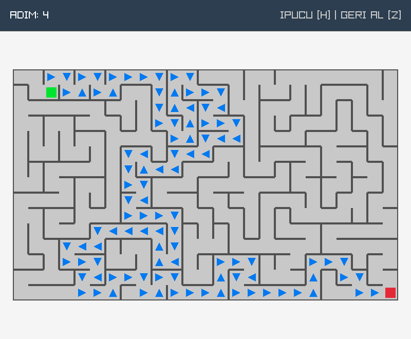

Labirent — Veri Yapıları Oyunu
C ve Raylib ile yazıldı, WebAssembly ile tarayıcıda çalışıyor. Labirent Stack tabanlı DFS ile üretilir, H tuşu Queue ile BFS çalıştırıp en kısa yolu gösterir, Z hamleyi yine Stack ile geri alır; skor tablosu BST, sıralama ve ikili arama kullanır.

Yükleniyor…
Hareket: W A S D · İpucu: H · Geri al: Z
Klavye ve fare gerekir. Skorlar sayfa yenilenince sıfırlanır.